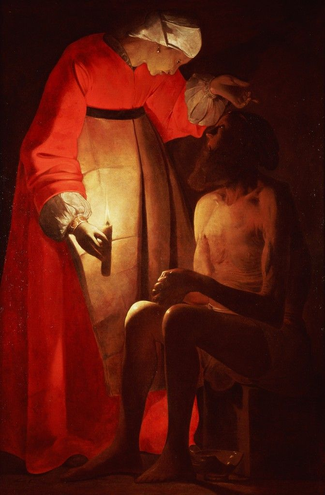
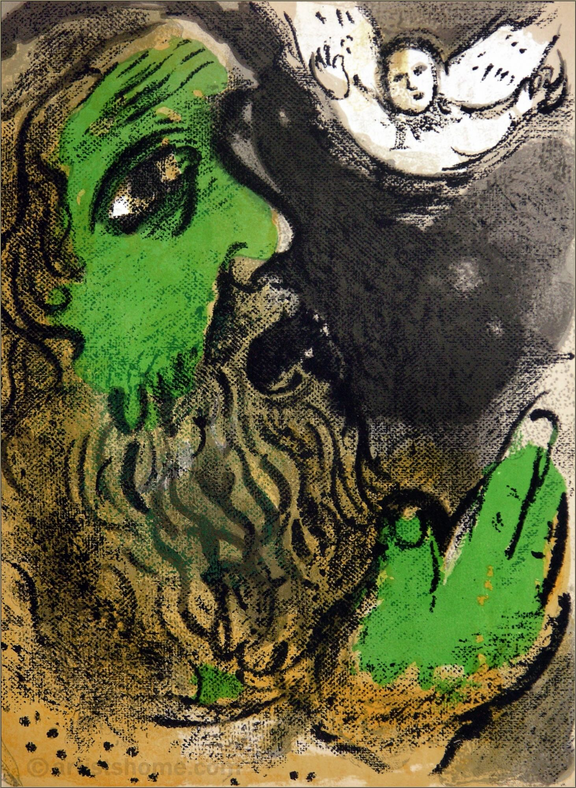

🚪 door 6 of the spell 🚪
"redemption"



happy friday, anon
today, we will explore the story where everything is stripped away, and yet an unbroken spirit remains.
this is the story of job, a man who is described as "blameless and upright, a man who fears G'd and shuns evil" (Job 1:1).
job was prosperous, with a large family, many servants, and abundant wealth. however, his life changed dramatically when satan challenged job's faithfulness, suggesting that he was faithful only because of his blessings. G'd allowed satan to test job, saying, "very well, then, everything he has is in your hands, but on the man himself do not lay a finger" (Job 1:12). job lost his wealth, his children, and his health. yet, he responded with remarkable faith, saying,
"the Lord gave and the Lord has taken away; may the name of the Lord be praised" (Job 1:21)
job's suffering led him to wrestle deeply with questions of justice and human suffering. his friends, instead of comfort him, accused him of wrongdoing, insisting, "surely your sin must be great" (Job 4:7). job maintained his innocence, expressing his anguish openly:
"why did i not perish at birth, and die as I came from the womb?" (Job 3:11)
throughout these dialogues, job demonstrates that it is possible to question G'd and wrestle with faith without abandoning it. G'd's wisdom, however, is beyond human understanding, as He later reminds Job: "where were you when i laid the earth’s foundation? Tell me, if you understand" (Job 38:4). this highlights the gap between human perception and divine purpose. in the end, Job’s faithfulness is rewarded, and God restores him abundantly:
"the Lord restored his fortunes and gave him twice as much as he had before" (Job 42:10)
job also receives a new family and a long, fulfilling life (Job 42:12-17). beyond material restoration, job gains a deeper understanding of G'd's sovereignty and power, "i know that my redeemer lives, and that in the end he will stand on the earth" (Job 19:25).
the story of job is a timeless lesson that suffering is not always a punishment, faith can endure adversity, and trust in G'd's wisdom provides hope, even in the darkest moments. "my ears had heard of you but now my eyes have seen you" (Job 42:5)
today, we will explore the story where everything is stripped away, and yet an unbroken spirit remains.
this is the story of job, a man who is described as "blameless and upright, a man who fears G'd and shuns evil" (Job 1:1).
job was prosperous, with a large family, many servants, and abundant wealth. however, his life changed dramatically when satan challenged job's faithfulness, suggesting that he was faithful only because of his blessings. G'd allowed satan to test job, saying, "very well, then, everything he has is in your hands, but on the man himself do not lay a finger" (Job 1:12). job lost his wealth, his children, and his health. yet, he responded with remarkable faith, saying,
"the Lord gave and the Lord has taken away; may the name of the Lord be praised" (Job 1:21)
job's suffering led him to wrestle deeply with questions of justice and human suffering. his friends, instead of comfort him, accused him of wrongdoing, insisting, "surely your sin must be great" (Job 4:7). job maintained his innocence, expressing his anguish openly:
"why did i not perish at birth, and die as I came from the womb?" (Job 3:11)
throughout these dialogues, job demonstrates that it is possible to question G'd and wrestle with faith without abandoning it. G'd's wisdom, however, is beyond human understanding, as He later reminds Job: "where were you when i laid the earth’s foundation? Tell me, if you understand" (Job 38:4). this highlights the gap between human perception and divine purpose. in the end, Job’s faithfulness is rewarded, and God restores him abundantly:
"the Lord restored his fortunes and gave him twice as much as he had before" (Job 42:10)
job also receives a new family and a long, fulfilling life (Job 42:12-17). beyond material restoration, job gains a deeper understanding of G'd's sovereignty and power, "i know that my redeemer lives, and that in the end he will stand on the earth" (Job 19:25).
the story of job is a timeless lesson that suffering is not always a punishment, faith can endure adversity, and trust in G'd's wisdom provides hope, even in the darkest moments. "my ears had heard of you but now my eyes have seen you" (Job 42:5)
today we pondered on things that might be worth dying for.
the task for you is to find the most important thing in your life.
and then imagine your life without it.
does losing it feel worse than death?
if does, then you have no ideas what death is.
see you tomorrow for some action.
see you tomorrow for some action.
← back to the countdown